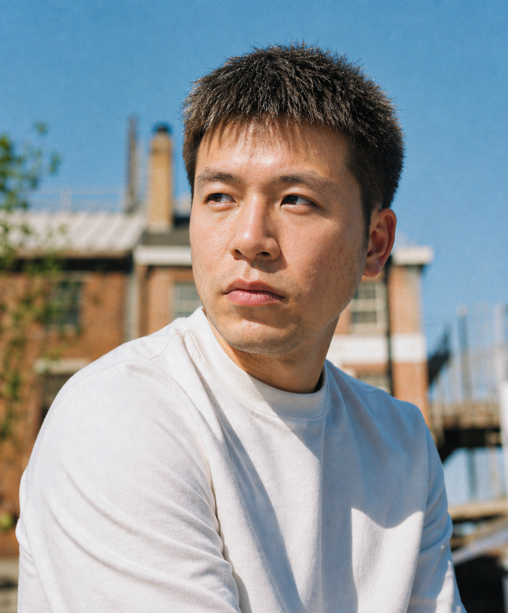

Youpeng Zhao



Brief Bio
I am a 4th-year PhD candidate at the University of Central Florida, advised by Prof. Jun Wang. I received my M.Sc from Georgia Tech and my B.Eng degree from Wuhan University. I have also worked on as student researcher at Microsoft Research and Google. I am one of the cohorts for ML and System Rising Stars 2025.
My research interests lie in the intersections of machine learning and computer systems (MLSys). I build efficient and resilient machine learning systems for large-scale AI models.
- Efficient AI : ISCA'24, AAAI'25, ICLR'26
- Algorithm-System Co-Design: ISCA'24, ICCAD'24
- AI Infrastructure: ISCA'24, ICCAD'24, MLSys'26
News
- 08/2026: [Service] Serve on the Program Committee at MLSys 2027
- 08/2026: [Service] Serve as a Reviewer at ICLR 2027
- 07/2026: [Talk] Invited to give a talk at AI Platform @ Saviynt
- 07/2026: [Talk] Invited to give a talk at Annapurna Labs @ AWS
- 06/2026: [Service] Serve on the Program Committee at AAAI 2027
- 05/2026: [Service] Serve as a Reviewer at COLM 2026
- 04/2026: [Talk] Invited to give a talk at AI Infra @ Roblox
- 04/2026: [Service] Serve as a Reviewer at NeurIPS 2026
Preprint
- TIDE: Efficient and Lossless MoE Diffusion LLM Inference with I/O-aware Expert Offload [Project] [Code] (*: equal contribution)
Selected Publications
-
Understanding and Tackling Label Errors in Individual-Level Natural Language Understanding
ASONAM 2026 -
Best Paper Award 🏆 - GhostServe: A Lightweight Checkpointing System in the Shadow for Fault-Tolerant LLM Serving MLSys 2026 (*: equal contribution , †: project lead)
- MeRino: Entropy-driven Design for Generative Language Models on IoT Devices AAAI 2025
- ALISA: Accelerating Large Language Model Inference via Sparsity-Aware KV Caching ISCA 2024
Fun Facts
- I used to play some elecctronic keyboard and won a national prize in 2008 🎹
- I played a bit college Esports (R6 Siege) and was the founding member of GT R6 Team in 2020 ⚔️
- My Chinese name is
有朋 , which means having friends from all over the world 🤓 - My English name is Kenneth, but people usually call me Ken or Kenny 😎
{kind=link}